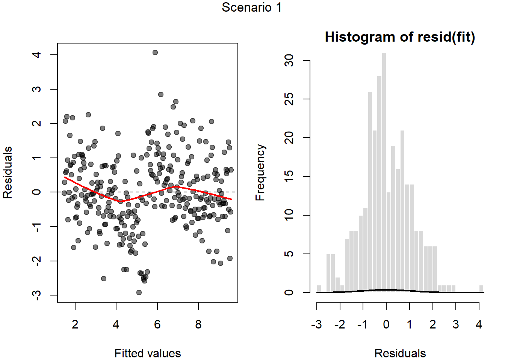
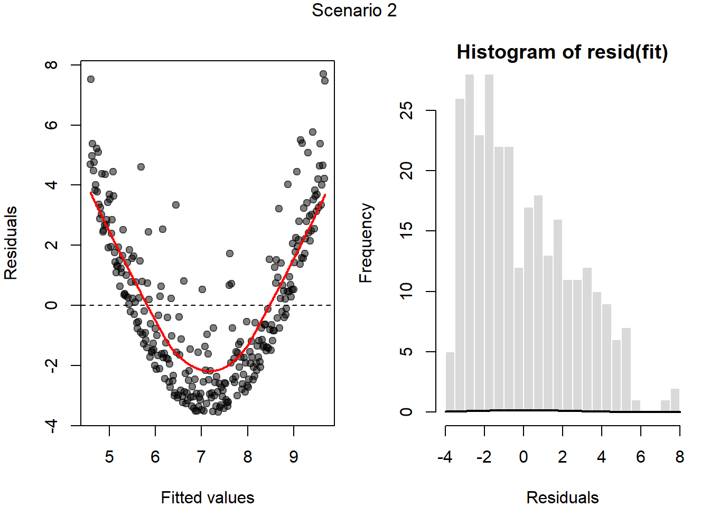
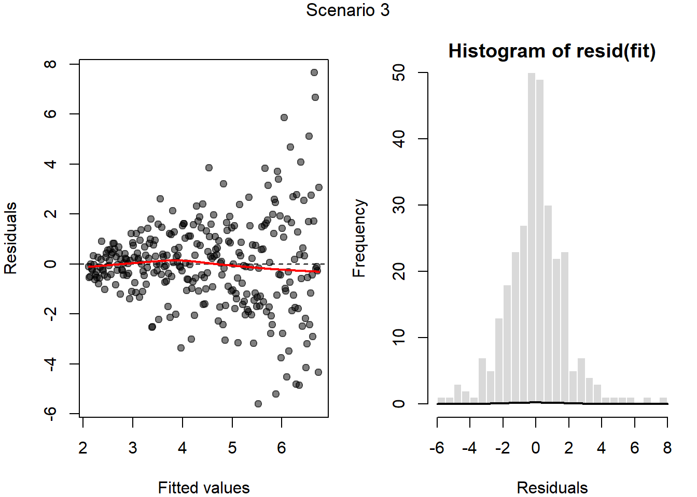
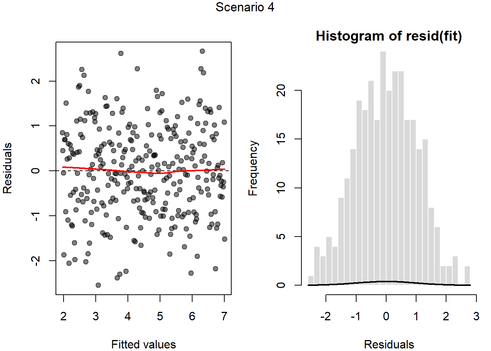
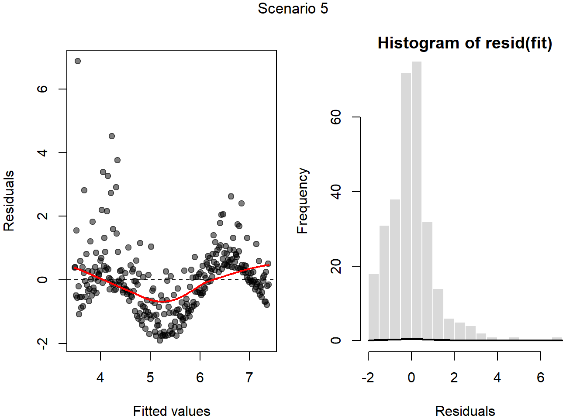
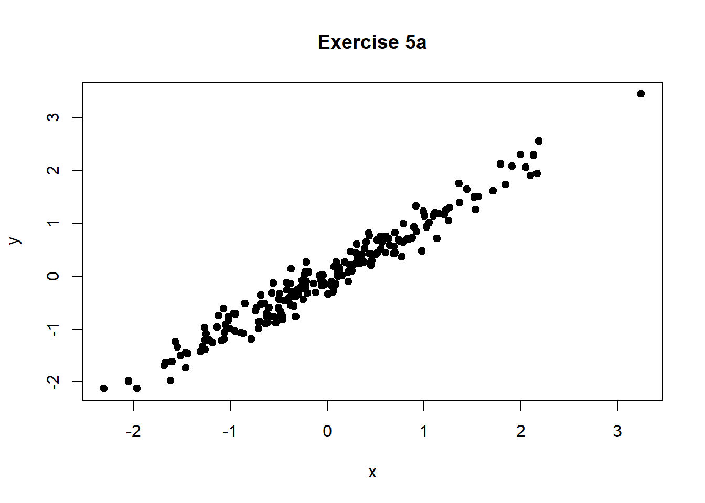
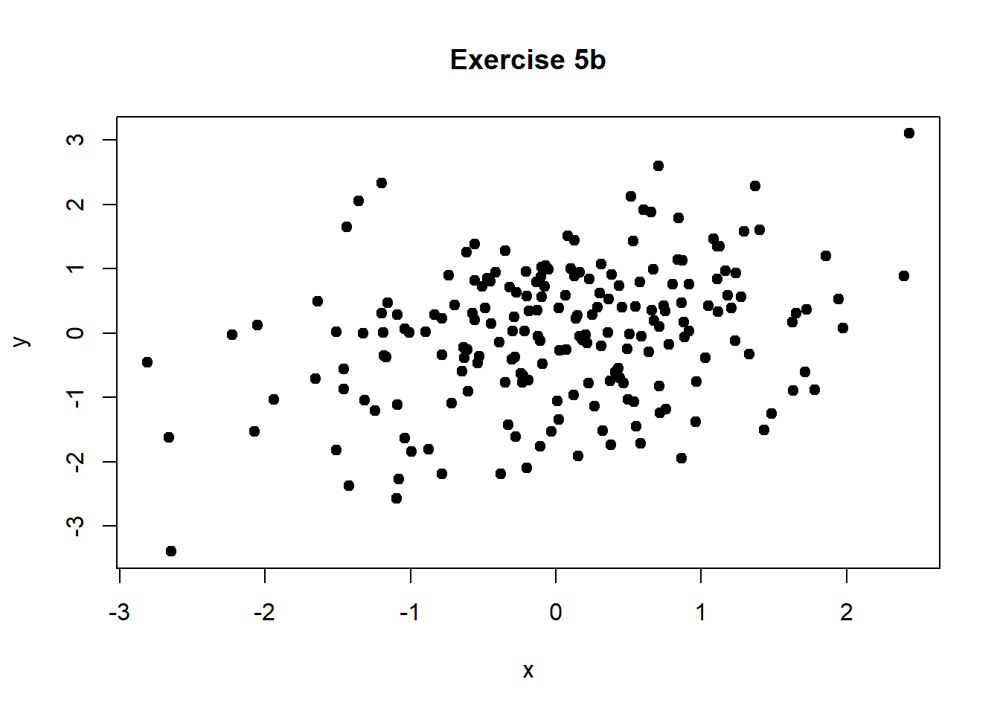
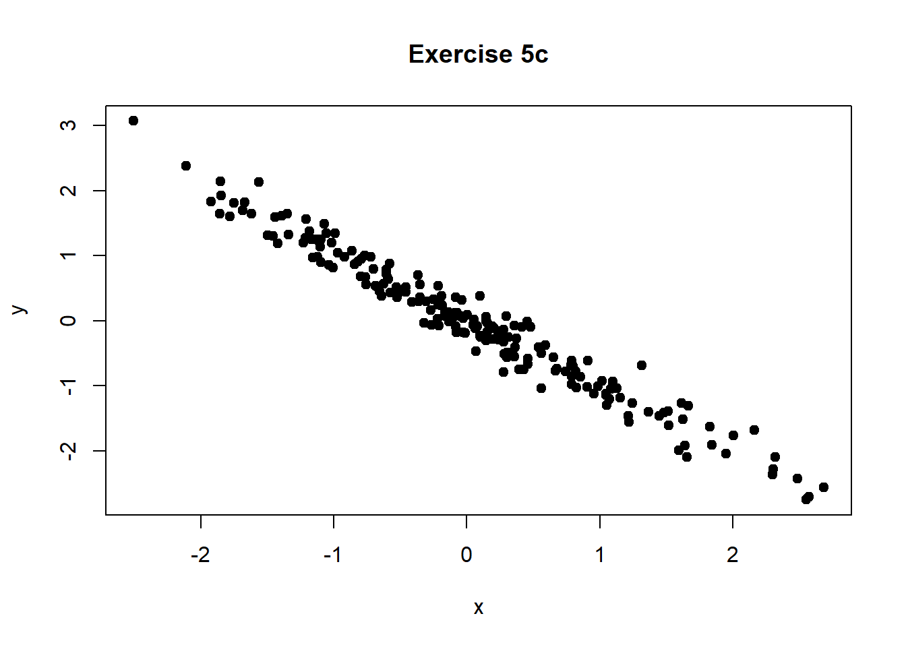
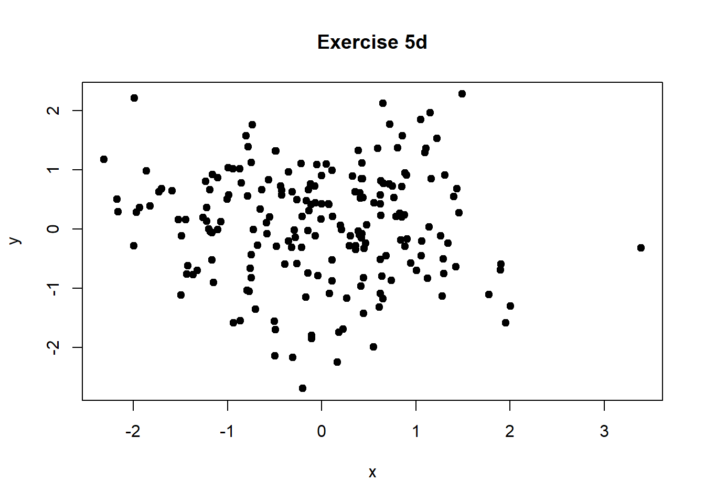
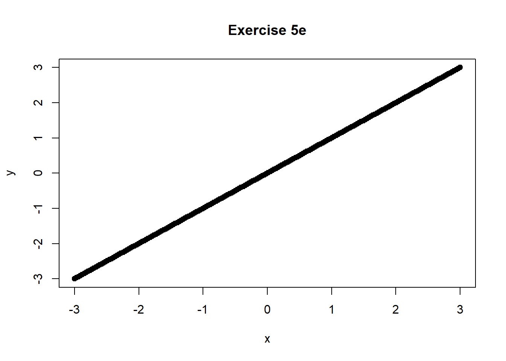

| term | estimate | std.error | statistic | p.value |
|---|---|---|---|---|
| (Intercept) | 7.3639127 | 1.1334468 | 6.4969197 | 0.0000000 |
| Pollutant1 | -0.1182973 | 0.1715004 | -0.6897783 | 0.4919977 |
| Pollutant2 | 0.0873557 | 0.1664747 | 0.5247384 | 0.6009747 |
| Pollutant3 | 0.1082822 | 0.1590986 | 0.6805982 | 0.4977640 |
Practice Problems
Exercise 1: Multicollinearity and linear regression
A (fictional) study examined the association between three air pollutants, Pollutant1, Pollutant2, and Pollutant3, and prevalence of asthma within counties in a fictional U.S. state. The pollutant variables are the average concentrations in parts per billion (ppb) measured at monitoring sites within that county. Prevalence of asthma is the % of the county’s population diagnosed with asthma; it’s treated as normally distributed. The sample comprised 100 counties in this state. Assume hypothesis tests are conducted with significance level \(\alpha=.05.\)
(a)
Write out the model that has been fit in symbols below (i.e. \(Asthma_{i} = ...\))
\(Asthma_{i} = \beta_{0}+\beta_{1}Pollutant1_{i}+\beta_{2}Pollutant2_{i}+\beta_{3}Pollutant3_{i}+\epsilon_{i}\)
(b)
What are the results of the hypothesis tests for the significance of each pollutant? Interpret these results in the context of the study.
Each of the hypothesis tests for individual pollutants’ association with asthma prevalence, holding the other pollutant levels constant, have a p-value greater than 0.05. So for each of these tests, we would fail to reject the null hypothesis that the air concentration of that pollutant in ppb is associated with asthma prevalence (%), holding the other pollutant levels constant.
(c)
Write the null and alternative hypotheses for the F-test for overall model significance. Write these hypotheses both in symbols, and in words in the context of the study.
Symbols: \(H_0: \beta_1=\beta_2=\beta_3=0. H_1:\) At least one of \(\beta_j, j=1,2,3\) is not equal to 0.
Words: The null hypothesis is that none of the pollutant concentrations (ppb) is associated with asthma prevalence (%). The alternative hypothesis is that at least one of the pollutant concentrations (ppb) is associated with asthma prevalence (%).
(d)
What is the result of the overall F-test for the linear regression model (see below), assume \(\alpha=0.05\)? Interpret this result in the context of the study.
glance(fit)# A tibble: 1 × 12
r.squared adj.r.squared sigma statistic p.value df logLik AIC BIC
<dbl> <dbl> <dbl> <dbl> <dbl> <dbl> <dbl> <dbl> <dbl>
1 0.120 0.0927 1.97 4.37 0.00626 3 -208. 425. 438.
# ℹ 3 more variables: deviance <dbl>, df.residual <int>, nobs <int>The overall F test results has a p-value of 0.00626, which is less than \(0.05\), so we reject \(H_0\) and conclude that there is evidence that at least one of the pollutant concentrations (ppb) is associated with asthma prevalence (%).
(e)
Interpret the \(R^{2}\) value and briefly explain what it suggests about the adequacy of the model.
Predictors explain about 12% of the variability in the model (or 12% of the variability in asthma prevalence). This relatively low value suggests that, while the predictors are related to asthma prevalence, the model leaves most of the variability unexplained and therefore has limited explanatory power.
(f)
The researchers decide to check for multicollinearity as follows:
library(car)
vif(fit)Pollutant1 Pollutant2 Pollutant3
62.52846 57.92934 53.92988 What did the researchers do? Explain in 1 sentence. What do the results indicate about multicollinearity affecting this model?
The researchers computed the VIF values (variable inflation factor) which checks for multicollinearity. Above 5 or 10 can be considered problematic levels of multicollinearity so it seems to confirm that it is present here.
Exercise 2: Conceptual
Assume the outcome variable \(Y\) takes values either \(0\) or \(1\).
(a)
If our outcome variable \(Y_{i}\) takes values \(0\) or \(1\), for a single observation what would we assume its distribution is?
Since we are talking about a single observation, it is Bernoulli, or equivalently, if we were talking about multiple observations (each with probability \(p\)) this would be binomial with the number of trials equal to the number of observations.
(b)
Why would or wouldn’t you want to use a linear regression model for this situation?
The linear regression model assumes a normally distributed outcome, which our outcome variable is not. A normally distributed outcome variable can (hypothetically) take any real number as a value, while our outcome variable must be 0 or 1. So our assumption of normality is incorrect. More concretely, assuming a linear model for the expected value of the outcome, as a function of predictors, can lead to estimated probabilities less than 0 or greater than 1, which are not possible. For these reasons we would not want to use a linear regression model.
(c)
What function of \(Y_{i}\) are we modelling when we use logistic regression?
Instead of modeling $Y_{i}={0}+{1}X_1 . . . $ we model $logit(Pr(Y_{i}=1))={0}+{1}X_1 . . . $. The logistic or logit function is \(logit(p)=\log\left(\frac{p}{1-p}\right)\). We use it in logistic regression because it ensures the values of \(p\) are always within \([0,1]\).
(d)
How does interpretation of our parameter estimates (e.g. \(\beta_1\)) change when considering logistic vs. linear regression?
Linear Regression - Continuous Predictors: \(\beta_{1}\) represents the expected change in the mean outcome for a one‑unit increase in the predictor, holding other variables constant. Logistic Regression - Continuous Predictors: \(\beta_{1}\) represents the change in the log-odds of the outcome for a one‑unit increase in the predictor, holding other variables constant. We often use exp(\(\beta_{1}\)) as an estimate for the odds ratio for a one-unit increase in the predictor
Linear Regression - Categorical Predictors: \(\beta_{1}\) represents the difference in mean outcome between a given category and the reference group, holding other variables constant. Logistic Regression - Categorical Predictors: \(\beta_{1}\) represents the difference in log-odds of the outcome between a given category and the reference group, holding other variables constant. Equivalently, exp(\(\beta_{1}\)) is the odds ratio comparing that category to the reference group.
Exercise 3: Logistic Regression
A (fictional) study examined the association between age (years) and region of residence in the U.S. with diagnosis of a particular condition. They used four regions of the continental U.S., values 1-4.
fit.glm <- glm(condition ~ age + Region, family = binomial, data = df2)
tidy(fit.glm) |>
kable()| term | estimate | std.error | statistic | p.value |
|---|---|---|---|---|
| (Intercept) | -2.2314637 | 0.4409363 | -5.060739 | 0.0000004 |
| age | 0.0610685 | 0.0085308 | 7.158578 | 0.0000000 |
| Region2 | 0.4699388 | 0.3340108 | 1.406957 | 0.1594402 |
| Region3 | 0.4505735 | 0.3364697 | 1.339121 | 0.1805314 |
| Region4 | 0.7701685 | 0.3550337 | 2.169283 | 0.0300612 |
(a)
What is the reference category for the region variable?
Category 1 is the reference category, which we can see because it’s not included as a dummy variable in the R summary output.
(b)
Write the model used.
Let \(p_i\) be \(P(Y_i=1)\), the probability that individual \(i\) is diagnosed with the condition. Then the model is \(logit(p_i)=\beta_0 + \beta_1 age_i + \beta_2(Region_i=2) + \beta_3(Region_i=3) + \beta_4(Region_i=4)\), where \(Region_i\) can take the values 1, 2, 3, 4 depending on the residence of observation \(i\).
(c)
Conduct a hypothesis test for the association between age and diagnosis of the condition, at level \(\alpha=.05\). Follow the steps:
- Write the null and alternative hypotheses, in words and symbols.
- Compare the p-value to \(\alpha\).
- Draw and state your conclusion in the context of the study.
\(H_0\): Age (years) is not associated with diagnosis probability, holding region of residence constant. In symbols, \(H_0: \beta_1=0\).
\(H_A\): Age (years) is associated with diagnosis probability, holding region of residence constant. In symbols, \(H_A\): \(\beta_1\neq 0\).
(d)
Interpret the coefficient for the age variable in the context of the study.
For every increase in age by one year, the odds of diagnosis changes by a factor of \(\exp(\hat{\beta}_1)= \exp(0.0610685)\).
(e)
Interpret the coefficient for region category 4 in the context of the study.
Individuals residing in region 4 have odds of diagnosis equal to \(\exp(\hat{\beta}_4)=exp(0.7701685)\) times the odds of diagnosis of an individual residing in region 1.
(f)
Based on the sign (positive/negative) of \(\hat{\beta}_1\), is increased age associated with increased or decreased probability of diagnosis?
The sign of the coefficient is positive, meaning that as age increases, the odds of diagnosis increase, and therefore as age increases, probability of diagnosis also increases.
(g)
Suppose the researchers suspect that the association between age and prevalence of this condition depends on BMI. They fit the following model.
- Given the interaction term is in the model, how do you interpret the coefficient for age?
The coefficient for age represents the log odds associated with a 1 year increase in age when BMI = 0, holding all other variables constant.
- How do you interpret the p-value for the coefficient for the interaction term?
Assuming \(\alpha=0.05\), given the p-value is 0.018 which is less than 0.05 we reject the null hypothesis that the association between age and this condition do not differ by BMI. We therefore have evidence to suggest the association between age and this condition differs by BMI.
fit.glm2 <- glm(
condition ~ age + BMI + age * BMI + Region,
family = binomial,
data = df2
)
tidy(fit.glm2) |>
kable()| term | estimate | std.error | statistic | p.value |
|---|---|---|---|---|
| (Intercept) | -3.1485524 | 2.7834083 | -1.1311860 | 0.2579768 |
| age | -0.0693549 | 0.0590109 | -1.1752897 | 0.2398788 |
| BMI | 0.0072106 | 0.1059317 | 0.0680686 | 0.9457310 |
| Region2 | 0.6299155 | 0.3643356 | 1.7289428 | 0.0838193 |
| Region3 | 0.5457417 | 0.3690384 | 1.4788209 | 0.1391882 |
| Region4 | 0.8284514 | 0.3872593 | 2.1392680 | 0.0324140 |
| age:BMI | 0.0055405 | 0.0023506 | 2.3570612 | 0.0184202 |
Exercise 4: Model Diagnostics
Below are diagnostic plots for assessing assumptions of linear regression for a model. Describe which, if any of the assumptions you would consider might be violated based on these plots
- Scenario 1

Some potential violations of linearity, as the line appears to jump up and down. Not as much evidence of violations for heteroskedascity (non-constant variance) and normality.
- Scenario 2

Violations of linearity and normality.
- Scenario 3

Violations of heteroskedascity (non-constant variance)
- Scenario 4

Most assumptions seem to be met
- Scenario 5

Violations of linearity and normality and potentially heteroskedascity (non-constant variance)
Exercise 5: Correlations
- Describe the direction and strength of the correlation between X and Y in the plot below. Would you expect the Pearson correlation coefficient to be close to 0, close to 1, or somewhere in between?
Strong positive correlation, correlation coefficient would be close to 1

- Describe the direction and strength of the correlation. Would the correlation coefficient be positive or negative?
Moderate positive correlation, correlation coefficient would be positive

- Is the association between X and Y strong or weak? Would the correlation coefficient be close to 0, close to 1, or close to −1?
Strong linear association between X and Y, correlation coefficient would be close to -1

- Would you expect the Pearson correlation coefficient to be close to 0, close to 1, or close to −1? Does a correlation near 0 imply there is no relationship between X and Y? Explain briefly.
Close to 0, not a lot of linear association between X and Y. A correlation near 0 does not imply there is no relationship between X and Y, only that there is not a linear association between X and Y.

- What value would you expect the correlation coefficient to be close to? How would you describe the relationship between X and Y?
Almost exactly 1- X and Y seem to be almost perfectly correlated.

- A public health researcher studies the relationship between daily physical activity (minutes per day) and body mass index (BMI) in a community sample and finds that the Pearson correlation coefficient is exactly zero. What does this result tell the researcher about the linear association between physical activity and BMI? Describe a situation in which Spearman correlation would be more appropriate than Pearson correlation for summarizing the association between these two variables. Briefly explain your reasoning.
A Pearson correlation coefficient of exactly zero indicates that there is no evidence of a linear association between daily physical activity and BMI in the sample. In other words, as physical activity increases or decreases, there is no evidence of a straight‑line relationship with BMI. This does not imply that the two variables are unrelated—only that they are not linearly related. Spearman correlation would be more appropriate if the relationship between physical activity and BMI is monotonic but non‑linear (e.g., BMI decreases rapidly at low levels of activity and then levels off), or if the data contain outliers or skewed distributions. Spearman correlation is based on ranks rather than raw values, making it less sensitive to nonlinearity and outliers than Pearson correlation.
- A public health researcher examines the association between neighborhood air pollution levels (\(PM_{2.5}\) concentration) and lung function (measured by FEV₁) and finds no evidence of a correlation between the two variables based on the Pearson correlation coefficient. However, after controlling for smoking intensity (e.g., pack‑years), the researcher finds that the partial correlation between air pollution and lung function is substantially larger. What does this suggest about the role of smoking intensity in the relationship between air pollution and lung function? Briefly explain how it is possible for the partial correlation to be larger than the unadjusted correlation.
The fact that the partial correlation is substantially larger after controlling for smoking intensity suggests that smoking intensity is a confounder in the relationship between air pollution and lung function. Smoking is related to both higher \(PM_{2.5}\) exposure (e.g., through residential or behavioral patterns) and poorer lung function, and its presence was masking the association between air pollution and FEV₁ in the unadjusted analysis. It is possible for the partial correlation to be larger than the unadjusted (Pearson) correlation because adjusting for smoking removes variation in lung function that is attributable to smoking rather than air pollution. Once this shared variation is accounted for, the remaining association between \(PM_{2.5}\) and FEV₁ can become stronger and more apparent.
Exercise 6: R Functions and What They Do
For each item in Column A, select the the single best matching description from Column B. Each description should be used exactly once.
Column A: R Functions
cor()
pcor.test()
ggpairs()
lm()
glm(family = "binomial")
predict()
vif()
tidy()
glance()
augment()
Column B: Descriptions
A. Returns a compact summary of overall model fit statistics (e.g., (R^2), F-statistic).
B. Computes variance inflation factors to assess multicollinearity among predictors.
C. Computes a numerical measure of linear association between two numeric variables.
D. Fits a regression model for a binary outcome using a logit link function.
E. Converts model output into a tidy data frame with one row per model coefficient.
F. Generates fitted values or predictions for new or existing observations based on a fitted model.
G. Produces a graphical display showing pairwise relationships among multiple variables.
H. Fits a linear regression model I. Tests the association between two variables while controlling for one or more additional variables.
J. Adds fitted values and residuals to the original dataset for diagnostic purposes.
cor()→ C
Computes a numerical measure of linear association between two numeric variables.pcor.test()→ I
Tests the association between two variables while controlling for one or more additional variables.ggpairs()→ G
Produces a graphical display showing pairwise relationships among multiple variables.lm()→ H
Fits a linear regression model.glm(family = "binomial")→ D
Fits a regression model for a binary outcome using a logit link function.predict()→ F
Generates fitted values or predictions for new or existing observations based on a fitted model.vif()→ B
Computes variance inflation factors to assess multicollinearity among predictors.tidy()→ E
Converts model output into a tidy data frame with one row per model coefficient.glance()→ A
Returns a compact summary of overall model fit statistics (e.g., R², F‑statistic).augment()→ J
Adds fitted values and residuals to the original dataset for diagnostic purposes.